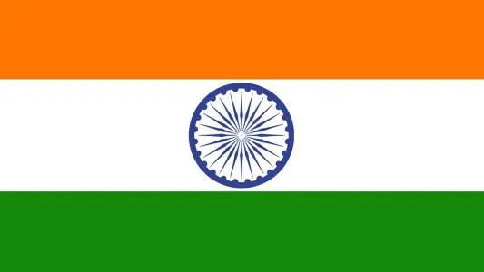

.jpg)

Total carbon emissions
2020-1.29 billion tons
As the world's fourth largest emitter of greenhouse gases, India's annual carbon dioxide emissions are 1.29 billion tons, and its per capita emissions are only 1.2 tons. Given India's level of development, any move to reduce carbon emissions will lead to increased poverty.
Analysis
India is the third largest carbon dioxide emitter in the world. It generated about 2.5 billion metric tons of carbon dioxide in 2017. With the development of Indian economy towards urbanization and industrialization, the consumption of solid
fuels such as coal has soared. India's coal as a source of electricity has increased from 68% in 1992 to 75% in 2015. India is rich in coal resources, and the price of coal in India is usually cheaper than imported oil and natural gas.
Considering these trends, the Indian economy may increase its dependence on coal, which is the main energy for coal power generation and heavy industry development. India's carbon dioxide footprint is bound to grow in the future
According to the CarbonBrief website of the climate change research institute, due to the economic slowdown, the growth of renewable energy and the impact of COVID-19, in the India 2019/2020 financial year ended in March, consumption of
coal was flat and carbon dioxide emissions dropped by about 1.4% because of the decline in coal consumption. This is India's first year-on-year reduction in carbon dioxide emissions in 40 years.
prevention
India submits climate action performance report to UN body, says it cut carbon emission intensity by 12% in 5 years.NEW DELHI: Just weeks after the Paris deal, India, on Friday, submitted its first Biennial Update Report (BUR) to a UN climate
body highlighting that the country is well on course to fulfil its global commitment by voluntarily cutting its carbon emission intensity (emission per unit of GDP) by about 12% between 2005 and 2010.